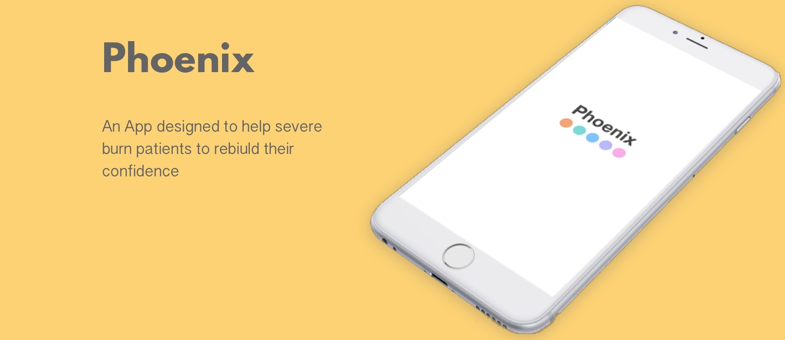
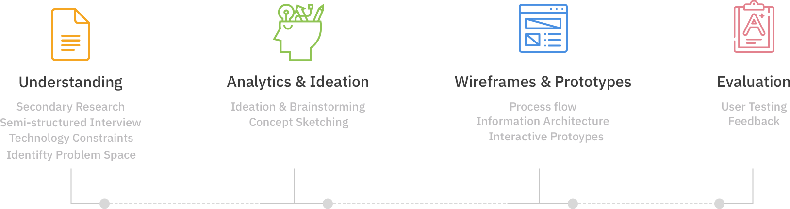
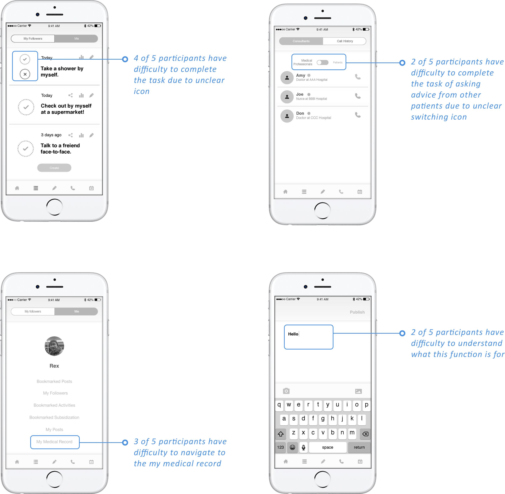

12/01/2017 - 01/10/2018
Lead Researcher, Prototyper, Interaction Designer
Jeremy Chen, A-Tasi, Aimee
Secondary Research, Semi-structured Interview, Competitive Analysis, Ideation, Process Flow, Prototyping, Usability Testing
Sketch, Adobe XD, Photoshop
Individual Project
Severe burn patients suffer both physical and psychological complications than other kinds of injuries. Physical difficulties can be recovery. However, it is hard to deal with psychological problems. The effects of burn trauma can profoundly affect an individual’s ability to cope with life stresses, as well as constrict one’s ability to relate to others for months, years, or a lifetime.
How might we design an application that helps burn patients to rebuild their confidence? The application we design serves as a multi-functional platform that the patients can increase their confidence with the designed to-do list function.
I worked collaboratively with my group on research, synthesising and ideation. As the research lead, I worked specifically on conducting qualitative research through writing research plan, interviewing 5 patients, analyzing the research data. I also contributed to design task flow and wireframe.
The earlier stages were focused on understanding the problem space, while the later stages involved ideation, design through wireframing and prototyping and evaluation.
For research phases, we know that a burn injury can be a traumatic experience, with tremendous social, physical, and psychological consequences. Many may also suffer from delirium, depression, anxiety, post-traumatic stress disorder (PTSD), and suffer from the loss of their normal appearance.
“ Stress disorders, including PTSD, are reported to occur after burn injuries in 18%–33% of cases. It is reported that anxiety is the common aftermath of physical and emotional trauma. ”
Journal Paper: Stress disorder and PTSD after burn injuries: a prospective study of predictors of PTSD at Sina Burn Center, Iran
After having some background knowledge, we framed our main research question:
How can we help burn patients recover their stress disorders through rebuilding their confidence?
Since stress disorder often happens at 2nd or 3rd degree burns, our target users are burn patients who suffer 2nd or 3rd degree burns.
We conducted semi-structured interviews with seven burn patients. We asked our participants a number of questions regarding their personal burn rehabilitation, and those questions are divided into three timeline, which are timeline before, during and after burning. Main questions include:
• What are the differences before and after burn injuries?
• When talking about burn rehabilitation, what are the most difficulties for you?
• How do you overcome physical and psychological complications?
Principle 1
Many patients were afraid of doing something that will remind the scary accident that she or he just happened.Principle 2
Friends’ and family’s support were much more helpful than most of the psychologists. Psychologists were not helpful in their rehabilitation.Principle 3
Some patients would avoid meeting with other victoms. They expected to be a normal person again.Principle 4
Most patients would be encouraged by each other patients.We then moved on to ideation, first translating our insights from research onto sticky notes and grouping them based on affinity. The resulting topics helped us understand which features would be important to include in our design. Later, everyone came up with several ideas and solutions. At the end, we discussed the strengthen and weakness of those ideas and refined those ideas to our design.
News Feed
News feed shows words and pictures from other patients to encourage each other.
To-do List
This function can encourage them to do something what they are afraid of doing after the tragedyOnline Consulting
A professional psychologist may not be appropriate to some participants. However, some participants are favorable to talk with other burn patients.Organized Resource Platform
Resources are not easily obtained by some patients. A section showing what events are held nearby can be helpful for them.Before patients enter Home page, this application requests them to sign-up with their Medical Record Number. This allows only the burn patients to access. Few advantages of this design are 1) Users will not be disturbed by none burn patients. 2) After signing in, patients can directly access their own comprehensive Medical Records through this application 3) Patients can make an appointment directly on this app 4) Patients can consult attending physicians for further instructions or suggestions on physical and mental treatment.
News feed is designed to encourage patients through other patients' posts. Users can save others' posts, activities, and subsidization. A user can also follow other patients to continuously receive positive posts.
The patient sets up their own goals to challenge itself and to gain the courage step by step of living like a normal person with the tracking record.
We try to solve this problem of encountering unsuitable or unfit psychologists assigned by the hospitalwith online consulting for customization.
The resources are organized all in one place which helps the patient to gather the information they want as quick as possible.
We created a prototype using Adobe XD to visualize the app transitions and have a published model that could be tested with users before development.
We conducted usability testing to validate our prototype. Below is our finding.
To conclude, through the conducted research and the critical insights we got back from the experienced severe burn patients, we designed the application with multiple functions to meet their needs and accompany them on the road of recovery. We know that the patients will still have to suffer from the physical discomfort and mental issue, but we are here offering help. We strive to create a better environment for the recovery of the severe burn patients. Future steps can be improved by having more connections with the related institutions and promoting the application to make more users aware of our application so that we are able to have a larger user base. We hope that every single burn patient can reborn as “Phoenix."